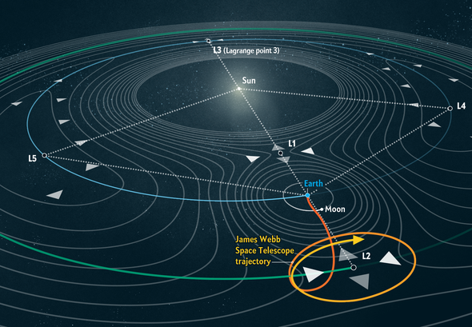

JWST 소개
James Webb Space Telescope
제임스 웹 우주 망원경(영어: James Webb Space Telescope, JWST)은 적외선 천문 관측을 주목적으로 하는 우주 망원경이다. 현존하는 광학 우주 망원경 중에서 규모가 가장 크며, 뛰어난 적외선 분해능과 감도 덕분에 허블 우주 망원경조차 관측하기 어려울 정도로 멀고 어두운 천체들을 관측할 수 있다. 이를 통해 최초의 별과 최초의 은하가 형성되는 모습을 포착하는 등 천문학과 우주론 마당에서 광범위한 연구가 가능할 것으로 기대되고 있다.
제임스 웹의 설계와 개발은 미국항공우주국(NASA)이 유럽우주국(ESA)과 캐나다우주국(CSA)과 협력하여 이끌었다. 망원경의 개발은 메릴랜드에 소재하는 NASA의 고더드우주비행센터(GSFC)가 맡았으며, 망원경의 운용은 볼티모어 존스홉킨스대학교 홈우드캠퍼스에 소재하는 우주망원경과학연구소가 하고 있다. 사업에 참여한 주요 기업으로는 노스롭 그루먼이 있다. 망원경의 명칭은 1961년부터 1968년까지 NASA 국장을 역임하며 머큐리, 제미니, 아폴로 계획을 추진한 제임스 에드윈 웨브의 이름에서 따온 것이다.
KEY FACTS
| 출시 제안일 | 2021년 12월 25일 오전 7시 20분 EST |
| 발사용 로켓 | Ariane 5 ECA |
| 임무 수행 기간 | 5-10년 |
| 총 페이로드 질량 | 천문대, 궤도 소모품 및 발사체 어댑터를 포함하여 약 6200kg. |
| 기본 거울의 직경 | 약 6.5m(21.3피트) |
특징
제임스 웹 우주 망원경의 중량은 허블 우주 망원경 중량의 절반밖에 되지 않는다. 금으로 코팅된 베릴륨 재질의 주거울은 직경이 6.5 m (21 ft)이며, 작은 육각형 거울 열여덟 장으로 구성되어 있다. 이 거울의 총면적은 26.3 m2 (283 ft2)이지만, 0.9 m2 (9.7 ft2)가 부거울과 부거울 지지대에 가려져 있기 때문에 집광부의 총면적은 25.4 m2 (273 ft2)이다. 이는 직경 2.4미터인 허블 주경의 집광 면적 4.0 m2 (43 ft2)보다 여섯 배 이상 크다. 제임스 웹의 거울이 금으로 코팅된 것은 적외선 반사율을 높이기 위함이며, 금 코팅은 내구성 때문에 얇은 유리막으로 덮여있다.
제임스 웹 망원경은 근적외선 관측을 주목적으로 설계되었으나, 사용하는 관측 장비에 따라 주황색에서 빨간색의 가시광선도 관측할 수 있으며, 마찬가지로 중적외선 영역도 가능하다.
허블이 관측할 수 있는 것보다 100분의 1 정도로 어두운 천체까지 관측할 수 있으며, 적색편이 z≈20까지 거슬러 올라가는 우주 역사에서 이른 시대(빅뱅 이후 1억 8천만 년 무렵의 우주시)의 천체들도 관측할 수 있다
제임스 웹 망원경은 태양에 대해 85˚ 이상의 회피각에서 초당 0.03각초보다 느린 각속도로 움직이는 태양계 천체를 관측할 수 있기도 하다.
이러한 천체로는 화성, 목성, 토성, 천왕성, 해왕성, 명왕성, 앞에서 열거한 천체들의 위성, 화성 궤도 너머의 혜성, 소행성이 있다.
위치와 궤도
제임스 웹 우주 망원경은 태양에 대한 지구 궤도 너머 약 1,500,000 km 떨어진 태양-지구 L2 라그랑주점을 중심으로 도는 헤일로 궤도에서 운용된다. 망원경이 공전하면서 실제 위치는 L2 점에 대해 약 250,000 km에서 832,000 km 거리까지 변화하지만, 지구와 달의 그림자에 들어가는 일은 없다.
태양과 지구의 L2 점 근처에 있는 물체는 지구와 같은 속도로 태양을 공전할 수 있기 때문에 망원경이 태양과 지구와 달에 대해 거리를 거의 일정하게 유지할 수 있으며, 차양막과 우주선 본체를 일정한 각도로 유지할 수 있다. 제임스 웹 망원경은 지구와 달의 그림자를 피하기 위해서 폭넓은 궤도를 가지기 때문에 태양을 향하는 면에서 꾸준히 태양광을 받으며 전력을 공급하고 지구와 교신하면서도 차양막을 통해 태양과 지구와 달에서 관측 장비로 오는 열과 빛을 차단하고, 지구와 달의 그림자에 들어갔을 때 우주선에 생길 수 있는 미세한 온도 변화를 피할 수 있다. 이러한 배열과 자세를 통해 우주선의 온도를 희미한 적외선 관측에 필요한 50K 아래로 일정하게 유지할 수 있다.
독도사랑_홍길동
JWST 영상
갤러리